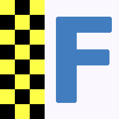
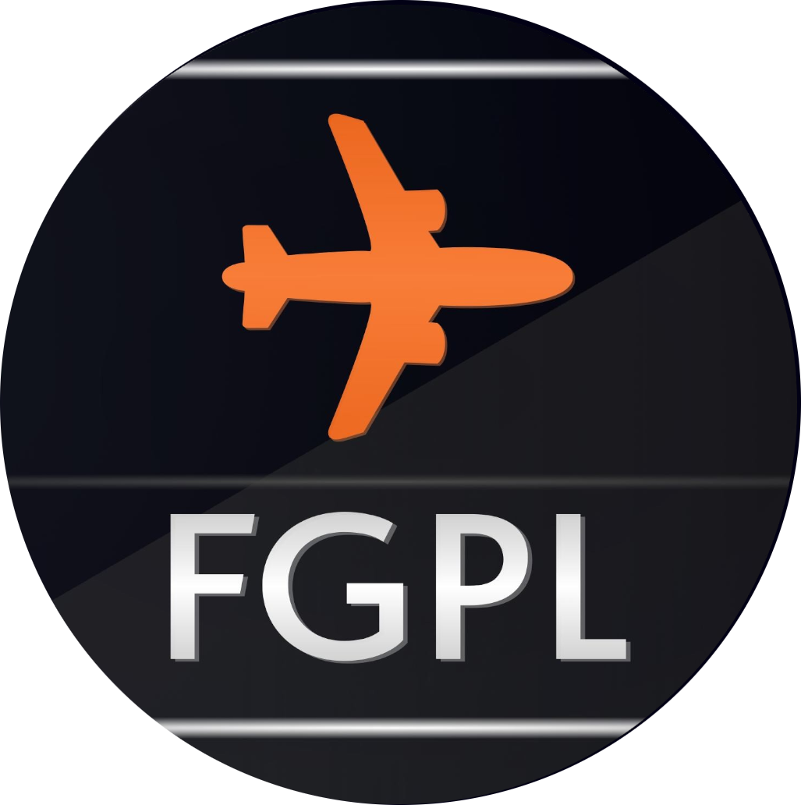
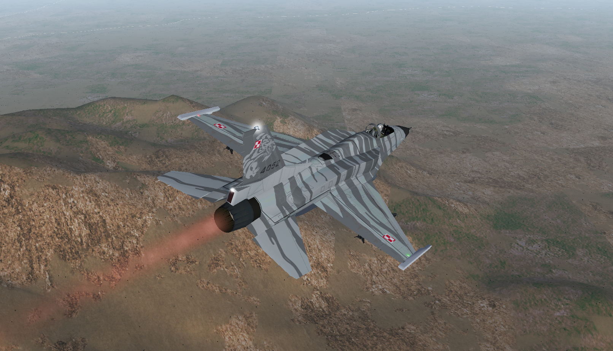

28 sierpnia 2025 roku zapisał się jako jeden z najsmutniejszych dni w historii lotnictwa.
Tragiczna śmierć ppłk. Macieja „Slaba” Krakowiana oznaczała nie tylko ogromną stratę dla nas wszystkich,
ale również bezpowrotne zakończenie działalności Tiger Demo Team, pozostawiając po sobie pustkę i silne emocje wśród pasjonatów lotnictwa.
Jednak pamięć o tym, czym był Tiger Demo, nie zginęła. My, FGPL Tiger Demo, eskadra działająca w ramach FlightGear Polska,
postanowiliśmy przywrócić to wyjątkowe demo do życia. Naszym celem jest nie tylko odtworzenie pokazów, ale przede wszystkim zachowanie ducha,
profesjonalizmu i pasji, które definiowały poprzedni zespół.
4 Kwietnia 2026
Tego dnia odbędzie się pierwszy i zarazem powitalny pokaz lotniczy FGPL Tiger Demo. Bedzie miał on miejsce o godzinie 19.00 na lotnisku w
Krzesinach (kod ICAO: EPKS). Pokaz można będzie obejrzeć na żywo w FlightGear (mpserver03) lub dzień później na naszym kanale YouTube.
Serdecznie zapraszamy wszystkich miłośników lotnictwa i obiecujemy niezapomniane chwile!

11 Kwietnia 2026
Ten dzień to wyjątkowe święto - otwartoźródłowy symulator FlightGear (LINK) obchodzi 30 rocznicę powstania! Wystąpimy razem z FGPL, miejsce i
dokładna godzina zostaną podane najpóźniej dzień przed wydarzeniem. O ile inne nasze eventy są związane głównie z lotnictwem wojskowym,
ten jest naprawdę warty obejrzenia dla wszystkich zainteresowanych lotnictwem. Można będzie zobaczyć różne samoloty i także poznać
dokładniej nasz symulator.

19 Sierpnia 2026
19 sierpnia to data powstania społeczności FGPL (FlightGear Polska). Już od sześciu lat co roku odbywają tego dnia pokazy lotnicze, na
których można podziwiać m.in. F-16 (loty indywidualne i w formacji), Zivko Edge 540, różne helikoptery i myśliwce. Dokładniejsze
informacje, m.in. dotyczące samolotów, które wystąpią, godziny oraz lotniska, zostaną ogłoszone w sierpniu. Serdecznie zapraszamy już dziś!
Nasi piloci
Porucznik Jan "Polsky" R.
Doświadczenie z F-16: 4 lata szkolenia
Osiągnięcia: Zestrzelenie samolotu 5. generacji F-22 w walce powietrznej

Porucznik Adam "Razor" S.
Doświadczenie z F-16: 3 lata szkolenia
Osiągnięcia: Uczestnictwo w licznych pokazach lotniczych; znakomita umiejetność tankowania w powietrzu.
Wideo z eventów i także niektórych treningów można obejrzeć na kanale YouTube FGPL Tiger Demo:
Serdecznie zapraszamy również do multiplayera w FlightGear - często popołudniu/wieczorem można spotkać pilotów Razor i/lub POLSKY1 w okolicy Krzesin (EPKS),
Dęblina (EPDE) bądź Powidza (EPPW). Pomocna w ich odnalezieniu można byc mapa: FlightGear online multiplayer map
W razie chęci dołączenia do zespołu FGPL Tiger Demo trzeba zdać egzamin z pilotażu F-16 w FlightGear. W tym celu należy wysłać do
użytkownika POLSKY1 (polsky1_90452) na Discordzie wiadomość, w której krótko opisane jest Wasze doświadczenie z tym samolotem, po czym zostaniecie poproszeni o mały pokaz lotniczy na żywo,
demonstrujący Wasze umiejętności. O przyjęciu do eskadry decyduje dwóch pilotów, odpowiedź (pozytywna lub negatywna) jest wydawana tego samego dnia.